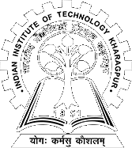
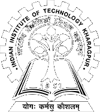
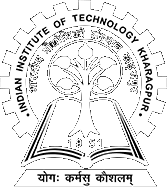
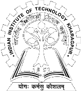

Here's an introduction to the Committees of Global Model United Nations 2024!
COMMITTEES OF GLOBAL MODEL UNITED NATIONS 2024
Click on the Committee Logo to know more!!
. . . . .
UNITED NATIONS SECURTITY COUNCIL (UNSC)

Aryan Anand
CHAIRPERSON
UNSC
UNSC (The United Nations Security Council) is the most powerful organ of the United Nations. It is charged with maintaining peace and security between nations. The Security Council has the power to make decisions that member governments must carry out under the United Nations Charter. The decisions of the Council are known as UN Security Council Resolutions.
Aryan Anand is a 3rd Year Undergraduate Student pursuing his Bachelor’s in Chemical Engineering from the Institute of Technology, Nirma University, Ahmedabad. He is also the Vice President of his University Debate Club, which has won several accolades under his able leadership. An avid debater and a participant in various Model UN Conferences and youth parliaments around the world, Aryan has played various roles in the capacity of a Delegate, an Organizing Committee Member, an Executive Board Member as well as the Member of the Secretariat in various Conferences at both Regional, National and International level. He is a person of calm demeanor, who values the essence of Diplomacy more than anything else. As someone who is extremely approachable, yet follows the rules to the letter, Delegates always seem to enjoy his presence. His golden rule is to impart learning with fun and disseminating knowledge with flair.
UNITED NATIONS HUMAN RIGHTS COUNCIL (UNHRC)
Sarbanga Mishra
CHAIRPERSON
UNHRC
UNHRC (The United Nations Human Right Council) withholds the responsibility to ensure and strengthen the promotion and protection of human rights on a global scale, as well as to address cases of human rights infringements and make recommendations upon them. It was established in 2006 with 47 member states.
An ardent MUNer from the Odisha circuit, Mr. Sarbanga Mishra is pursuing his final year of bachelor's degree at Christ University, Bangalore. A student of journalism himself, he is no stranger to global affairs and journalistic skills. As a delegate, Mr. Mishra has attended numerous Model United Nations conferences and has bagged more than 40 Best Delegate awards, most of which are from prestigious institutions of India. He strongly believes that every good executive board member must be a quality delegate first as that clearly gives one a strong insight into MUNs. Being part of the Indian MUNing circuit since 2014, he has chaired numerous institutional MUN conferences based in sundry circuits of India and is well known for being an executive board member who has mastered the technicalities of MUNs, which adds to his credibility as well as impeccable MUNing skills. We believe that he not only brings to the table a plethora of knowledge but also an ability to moderate committees to the best of his abilities, with utmost rectitude. Other than being an MUNer, he is an academician who has authored various research papers and bagged best research paper awards from reputed institutions of India. He's also a well known debater, spoken poet, national level martial artist, sterling wordsmith, enthusiastic chess player and published writer. Furthermore, he takes keen interest in International law and International relations. He claims that reading and researching would always be his "metaphorical crushes".
ECONOMIC AND SOCIAL COUNCIL (ECOSOC)
Shouvonik Bos
CHAIRPERSON
ECOSOC
ECOSOC (The United Nations Economic and Social Council) is dedicated to establishing global frameworks that promote a higher standard of living. Being established by the United Nations Charter in 1945 and consisting of 54 member states, ECOSOC is one of the six principal organs of the United Nations. The committee is responsible for finding solutions to various international economic, social, and environmental issues. Its role in encouraging the protection of human rights and fundamental freedoms was also remarkable.
A zugzwang breaker, Shouvonik Bose entered the halls of MUNs in 2018. From his first MUN with a "Best Newcomer" award to chairing International MUNs, the exponential growth in his MUN career is matched only with his love for argumentative debate and heated discussions about anything and everything under the sun. Revering logic, facts and unique opinions, he loves to play the devil's advocate where he will force you to your wit's end. Graduating in 2022 with B. Tech in Computer Science, his knowledge, experience, and opinions are ever evolving. MUNs, in his opinion, is a brilliant way to hone strategic foresight and employ rational thinking in one's day to day life and build towards a sustainable future.
DISARMAMENT AND INTERNATIONAL SECURITY COMMITTEE (DISEC)
Adarsh Kumar Singh
CHAIRPERSON
DISEC
DISEC (The United Nations Disarmament and International Security Committee) was created as the first of the Main Committees in the General Assembly when the charter of the United Nations was signed in 1945. The purpose of the committee in the General Assembly is to establish ‘general principles of cooperation in the maintenance of international peace and security, including the principles governing disarmament and the regulation of armaments, and also to give “recommendations with regard to such principles to the Members or to the Security Council.”
Adarsh Kumar Singh is currently pursuing his final year of Mechanical Engineering at GD Goenka University. He has been working as an education consultant and trainer since 2018 for sessions on various soft Skills. So far, he has worked with more than 70 institutions across the northern part of India. He is the Founder, COO of Aspirant Learning, India’s fastest growing registered education and training enterprise. He also has several awards such as Harvard Act2Impact to his name for his active participation in the field of public speaking and arts.
. . . . .

GLOBAL
MODEL
UNITED
NATIONS